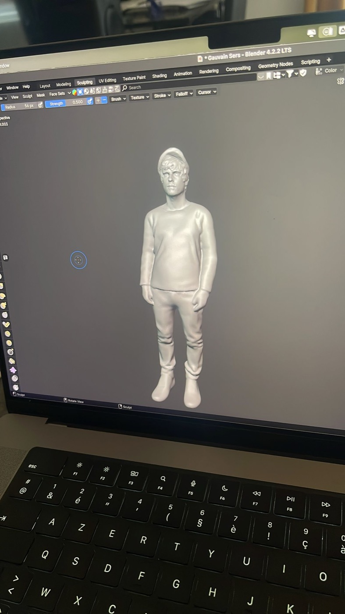
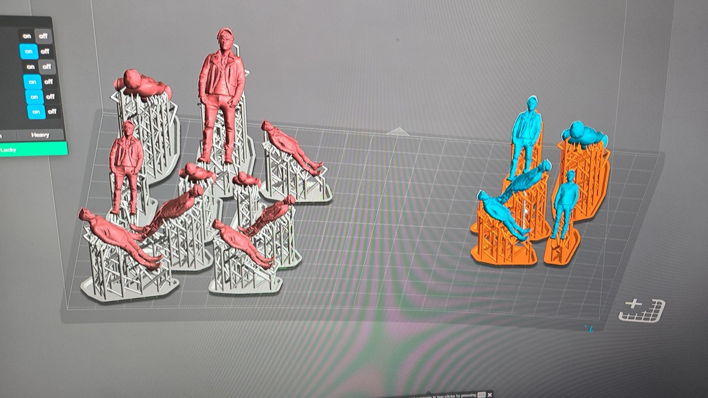
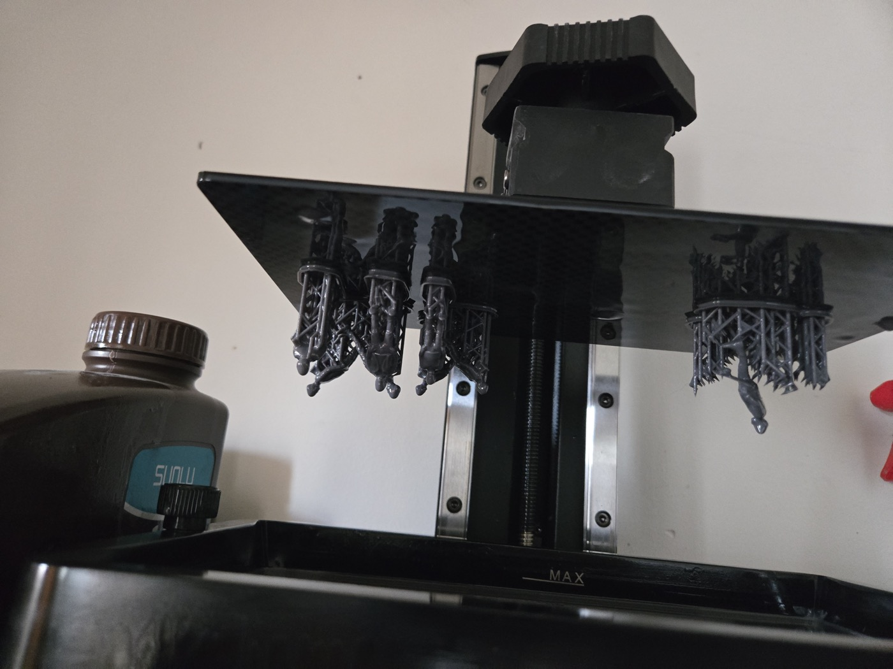
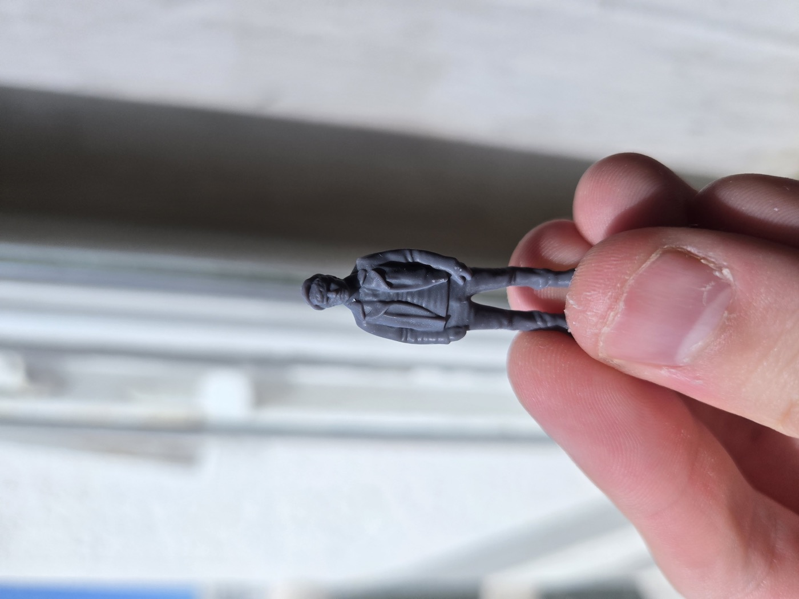
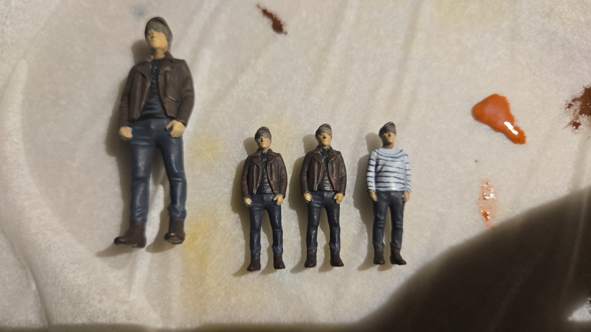
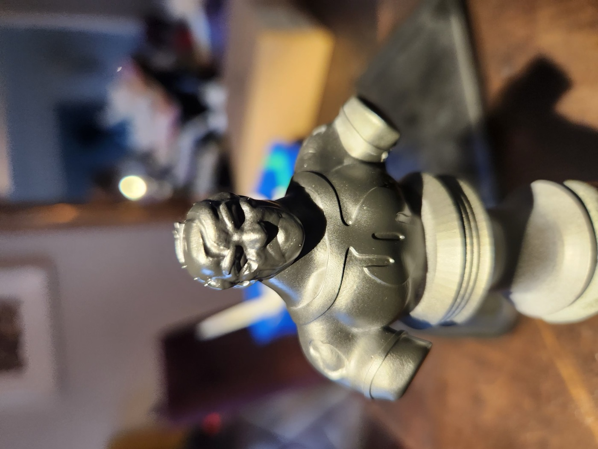
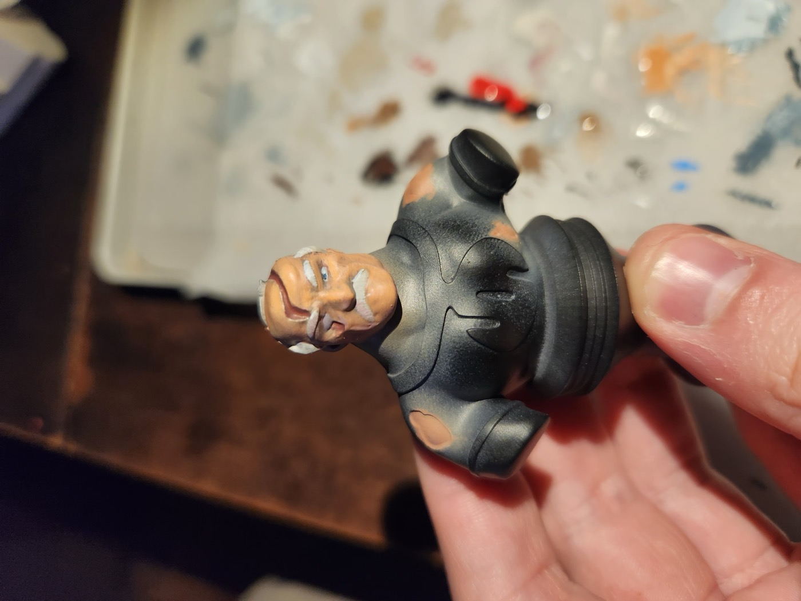

Catégorie
Processus de
Création
De l'ébauche à la réalisation finale — les étapes et méthodes derrière chaque projet.
Processus
De l'idée à la figurine
Figurines Gauvain Sers

Modélisation
Sculpture numérique du personnage sur Blender, en partant de zéro jusqu'au corps complet.

Préparation
Découpage et orientation des pièces dans le slicer, ajout des supports d'impression.


Impression
Impression résine sur imprimante SLA, puis nettoyage et photopolymérisation des pièces.

Peinture
Application des couleurs à la main couche par couche, avec lavis et rehauts de lumière.
Conquest


Modélisation
Sculpture numérique du buste sur Nomad Sculpt (iPad), du blocage des formes jusqu'aux détails fins.


Rendering
Application des matériaux et des couleurs directement dans Nomad Sculpt pour visualiser le rendu final.

Impression
Impression résine du buste, nettoyage et préparation de la surface avant peinture.

Peinture
Mise en peinture du buste à l'acrylique, en suivant le rendu 3D comme référence de couleur.